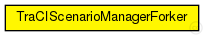

This documentation is released under the Creative Commons license
This documentation is released under the Creative Commons licenseExtends the TraCIScenarioManager to automatically fork an instance of SUMO when needed.
All other functionality is provided by the TraCIScenarioManager.
See the Veins website for a tutorial, documentation, and publications .
Author: Christoph Sommer, Florian Hagenauer
See also: TraCIMobility
See also: TraCIScenarioManager
The following diagram shows usage relationships between types. Unresolved types are missing from the diagram. Click here to see the full picture.
| Name | Type | Description |
|---|---|---|
| TraCIScenarioManager | simple module | (no description) |
| Name | Type | Default value | Description |
|---|---|---|---|
| connectAt | double | 0s |
when to connect to TraCI server (must be the initial timestep of the server) |
| firstStepAt | double | -1s |
when to start synchronizing with the TraCI server (-1: immediately after connecting) |
| updateInterval | double | 1s |
time interval of hosts' position updates |
| moduleType | string | "org.car2x.veins.nodes.Car" |
module type to be used in the simulation for each managed vehicle |
| moduleName | string | "node" |
module name to be used in the simulation for each managed vehicle |
| moduleDisplayString | string | "*='i=veins/node/car;is=vs'" |
module displayString to be used in the simulation for each managed vehicle display strings key-value pairs needs to be protected with single quotes, as they use an = sign as the type mappings. For example *.manager.moduleDisplayString = "'i=block/process'" *.manager.moduleDisplayString = "a='i=block/process' b='i=misc/sun'" moduleDisplayString can also be left empty: *.manager.moduleDisplayString = "" |
| trafficLightModuleType | string | "" |
module type to be used in the simulation for each managed traffic light |
| trafficLightModuleName | string | "tls" |
module name to be used in the simulation for each managed traffic light |
| trafficLightFilter | string | "" |
filter string to select which tls shall be subscribed, list sumo IDs separated by spaces |
| trafficLightModuleDisplayString | string | "i=misc/node2;is=vs;r=0,,#707070,1" |
module displayString to be used in the simulation for each managed traffic light |
| host | string | "localhost" |
server hostname |
| port | int | -1 |
server port (-1: automatic) |
| seed | int | -1 |
seed value to set in launch configuration, if missing (-1: current run number) |
| autoShutdown | bool | true |
Shutdown module as soon as no more vehicles are in the simulation |
| margin | int | 25 |
margin to add to all received vehicle positions |
| roiRoads | string | "" |
which roads (e.g. "hwy1 hwy2") are considered to consitute the region of interest, if not empty |
| roiRects | string | "" |
which rectangles (e.g. "0,0-10,10 20,20-30,30) are considered to consitute the region of interest, if not empty. Note that these rectangles have to use TraCI (SUMO) coordinates and not OMNeT++. They can be easily read from sumo-gui. |
| penetrationRate | double | 1 |
the probability of a vehicle being equipped with Car2X technology |
| ignoreGuiCommands | bool | false |
whether to ignore all TraCI commands that only make sense when the server has a graphical user interface |
| commandLine | string | "$command --remote-port $port --seed $seed --configuration-file $configFile" |
command line for running TraCI server (substituting $command, $configFile, $seed, $port) |
| command | string | "sumo" |
substitution for $command parameter |
| configFile | string | "my.sumo.cfg" |
substitution for $configFile parameter |
| Name | Value | Description |
|---|---|---|
| display | i=block/network2 | |
| class | veins::TraCIScenarioManagerForker |
| Name | Type | Unit |
|---|---|---|
| org_car2x_veins_modules_mobility_traciTimestepBegin | simtime_t | |
| org_car2x_veins_modules_mobility_traciTimestepEnd | simtime_t | |
| org_car2x_veins_modules_mobility_traciInitialized | bool | |
| org_car2x_veins_modules_mobility_traciModuleAdded | cModule | |
| org_car2x_veins_modules_mobility_traciModuleRemoved | cModule |
This documentation is released under the Creative Commons license